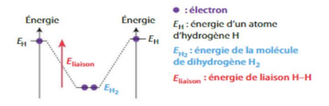

Thème : Constitution et transformations de la matière · C. Poirault-Gauvin
Pour chaque formule, indique s'il s'agit d'un atome, d'une molécule, d'un cation ou d'un anion (ou d'un composé ionique) :
| Formule | Ta réponse |
|---|---|
| Fe | |
| H₂O | |
| Na⁺ | |
| Cl⁻ | |
| NaCl (solide) |
« Tous les corps sont constitués de particules très petites et indivisibles : les atomes. » — Dalton (1766-1844)
Fin du XIXe siècle : l'atome n'est pas indivisible (Rutherford, 1911).
Ordre de grandeur de la taille d'un atome :
Ordre de grandeur de la taille du noyau :
Comparer les deux tailles (utiliser un quotient et l'écriture scientifique) :
Le rapport (taille atome) / (taille noyau) vaut environ :
Donc le noyau est environ … fois plus petit que l'atome :
| Particule | Masse | Charge électrique |
|---|---|---|
| 1,673 × 10⁻²⁷ kg | q = +e = +1,602 × 10⁻¹⁹ C | |
| 1,675 × 10⁻²⁷ kg | 0 | |
| 9,109 × 10⁻³¹ kg | q = −e = −1,602 × 10⁻¹⁹ C |
Remarque : ne pas confondre la charge électrique élémentaire e et le symbole de l'électron e⁻.
Un atome est représenté par le symbole suivant :
AZX
Comment trouver le nombre de neutrons dans un noyau ?
Exemple 1 : Un atome de phosphore (symbole P) possède 31 nucléons et 15 protons. Écrire la représentation symbolique de son noyau :
Notation : P
Exemple 2 : Le noyau d'un atome d'aluminium a pour notation symbolique 2713Al. Écrire la composition de cet atome :
Nombre de protons :
Nombre d'électrons :
Nombre de neutrons :
Application : donner les compositions chimiques des ions phosphore (P⁻) et aluminium (Al³⁺) :
Ion P⁻ (le noyau de phosphore a pour notation 3115P) — protons : · neutrons : · électrons :
Ion Al³⁺ (le noyau d'aluminium a pour notation 2713Al) — protons : · neutrons : · électrons :
Si le nombre de neutrons change mais que le nombre de protons reste le même, l'élément chimique reste le même mais avec un nombre de nucléons différent : on appelle ces espèces des isotopes. Exemple :
Le carbone 12 ( C , avec neutrons) et le carbone 14 ( C , avec neutrons) sont deux isotopes du carbone : même Z, mais A différent.
Le proton et le neutron ont des masses sensiblement identiques, et mproton ≈ 1836 × mélectron : on néglige donc souvent la masse des électrons.
Toute la masse d'un atome est concentrée dans le noyau : si on compare l'atome à un terrain de foot, le noyau est une aiguille de 1 mm placée au centre, le reste n'étant que du vide. On dit que la matière a une structure lacunaire.
Application : un atome de francium a pour notation symbolique 22387Fr. Quelle est la masse de ce noyau ? (utiliser les deux formules précédentes et conclure)
Nombre de neutrons N = A − Z =
Formule à utiliser pour le calcul détaillé :
Résultat du calcul détaillé (avec électrons) :
Résultat avec la formule simplifiée (masse des électrons négligée) :
Conclusion :
Complète les phrases suivantes à l'aide des listes déroulantes :
Pour tous les atomes dont Z ≤ 18, les électrons du cortège se répartissent en couches numérotées et en sous-couches .
Chaque sous-couche contient un nombre maximal d'électrons : électrons sur la sous-couche , électrons sur la sous-couche au maximum.
Pour établir la configuration électronique d'un atome, on remplit dans l'ordre, à partir du noyau, la sous-couche , puis la sous-couche de la couche , puis les couches suivantes (2p, 3s, 3p...).
Symbole :
Numéro atomique Z :
Nombre d'électrons :
Électrons de valence :
Configuration électronique :
Que dit-on d'une couche contenant son nombre maximal d'électrons ?
À quelle condition un électron peut-il être placé sur une couche ?
Qu'appelle-t-on électron de valence ?
Quel est le point commun entre les atomes des éléments situés sur une même ligne (période) du tableau périodique ?
Où sont situés les éléments dont les atomes ont le même nombre d'électrons de valence ?
Qu'ont en commun les éléments d'une même colonne ? Que constituent-ils ?
Présente le nombre d'électrons de valence et les propriétés chimiques des éléments de ces familles (utilise le tableau périodique en ligne).
Colonne 1 :
Colonne 2 :
Colonne 17 :
Colonne 18 :
Pourquoi sont-ils chimiquement stables ?
Exemple : donner la configuration électronique de l'ion sodium Na⁺ :
Configuration électronique de Na⁺ :
Exemple : donner la configuration électronique de l'ion chlorure Cl⁻ :
Configuration électronique de Cl⁻ :
💡 Astuce : reviens à l'outil interactif de l'onglet 2 pour visualiser la configuration de l'atome neutre avant de retirer ou ajouter un électron.
Pour chaque molécule (utilise les boutons ci-dessus pour afficher son schéma de Lewis), indique le nombre de doublets liants et de doublets non liants :
| Molécule | Doublets liants | Doublets non liants |
|---|---|---|
| H₂ | ||
| CH₄ | ||
| H₂O | ||
| CH₃OH |
Justifier la stabilité des atomes dans ces molécules :
Donner le schéma de Lewis de l'ammoniac (utilise l'outil ci-dessus pour vérifier ta réponse, puis dessine-le sur ta fiche papier) :
Deux atomes d'hydrogène isolés possèdent une énergie totale plus élevée que la molécule H₂ qu'ils forment en se liant. La différence d'énergie correspond à l'énergie de liaison Eliaison(H–H), libérée lors de la formation de la liaison (et qu'il faudrait fournir pour la rompre).

Eliaison(H–H) ≈ 436 kJ/mol : il faut fournir 436 kJ par mole de H₂ pour casser la liaison et obtenir 2 mol d'atomes H séparés. À l'inverse, la formation de H₂ à partir de 2 atomes H libère cette énergie : H₂ est donc plus stable (niveau d'énergie plus bas) que 2 atomes H isolés.
Voici quelques énergies de liaison moyennes (en kJ/mol) :
| Liaison | Énergie de liaison (kJ/mol) |
|---|---|
| C–H | 415 |
| O–H | 463 |
| C–O | 358 |
| H–H | 436 |
Pour chaque molécule, donne l'expression littérale de l'énergie totale de liaison, puis sa valeur numérique :
CH₄ (4 liaisons C–H) :
Expression littérale :
Valeur numérique :
H₂O (2 liaisons O–H) :
Expression littérale :
Valeur numérique :
CH₃OH (3 liaisons C–H, 1 liaison C–O, 1 liaison O–H) :
Expression littérale :
Valeur numérique :
Avant de cliquer : complète directement dans le tableau ci-dessous le nom de la famille (au-dessus des colonnes 1, 2, 17 et 18), le nombre d'électrons de valence de chaque colonne (juste au-dessus des numéros de colonne), et le symbole de Lewis de chaque colonne (en dessous du tableau).
Ensuite, clique sur chaque case pour révéler le symbole complet, la configuration électronique et le nombre d'électrons de valence de l'élément, et vérifie tes réponses.
Paul Olivier · 5 min 22
Paul Olivier · 3 min 17
Paul Olivier · 5 min 50
Paul Olivier · 3 min 04
Paul Olivier · 2 min 39
Paul Olivier · 4 min 31
Paul Olivier · 4 min 12
Hatier.
Paul Olivier · 3 min 27
Paul Olivier · 4 min 40
Hatier.
Paul Olivier · 3 min 42
Paul Olivier · 3 min 08
PCCL.
PCCL.
PCCL.
Ostralo.
Ostralo.
Ostralo.
Hatier.
Hatier.
Hatier.
Hatier.